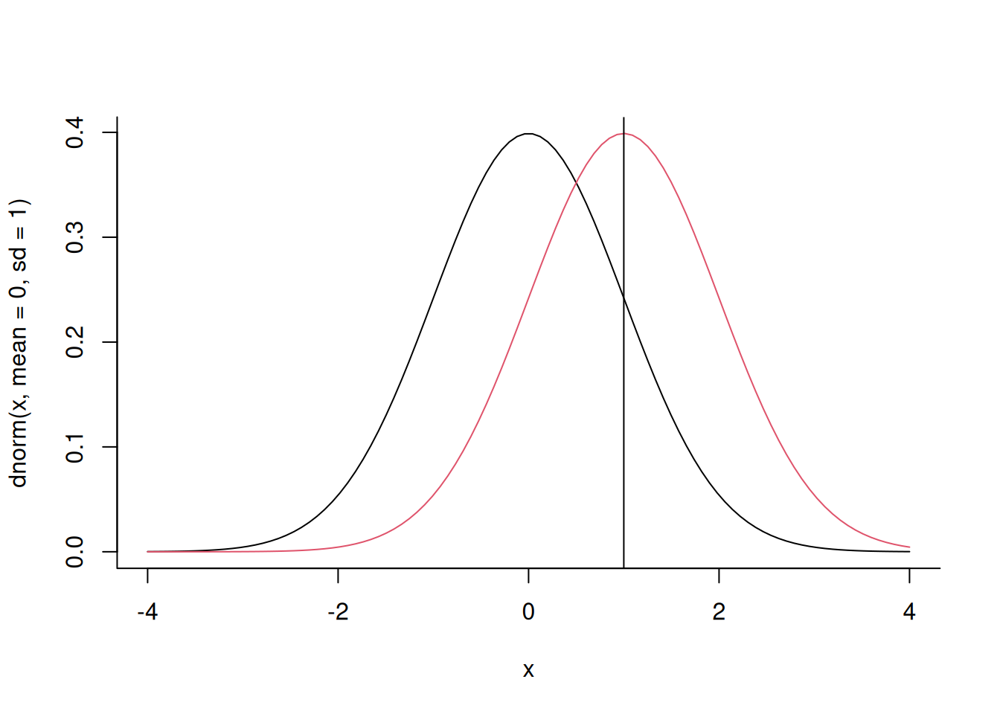
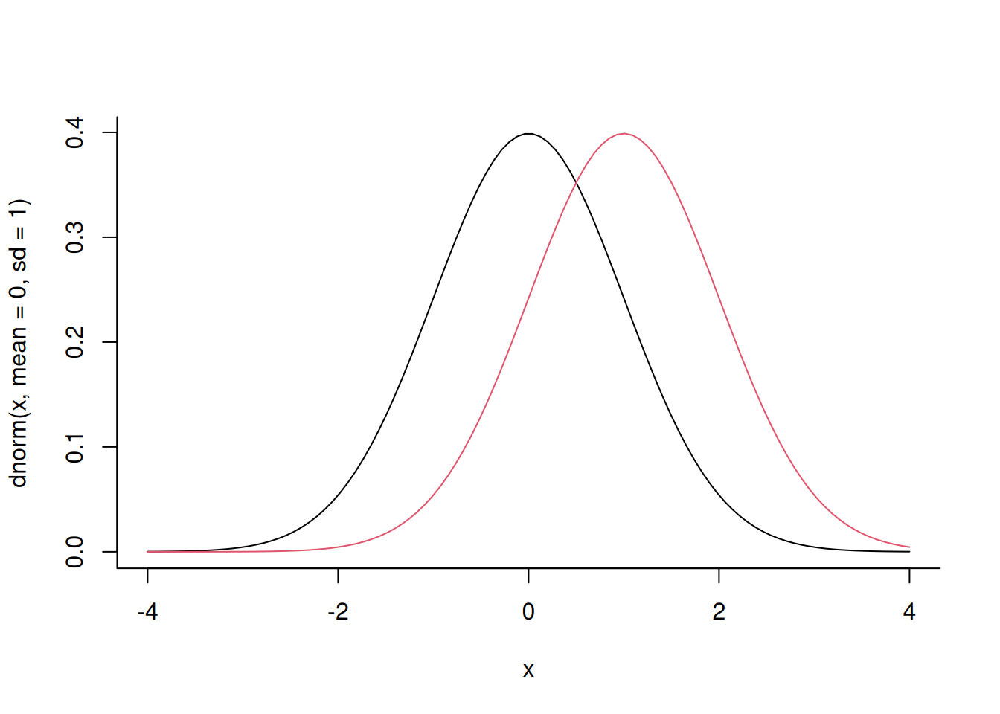
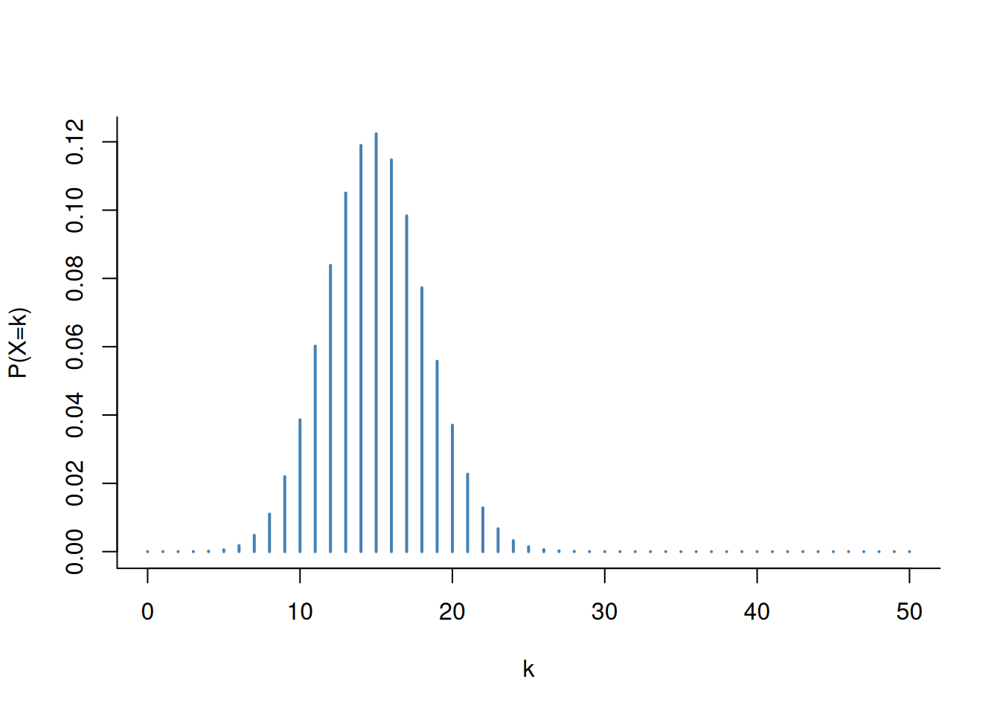
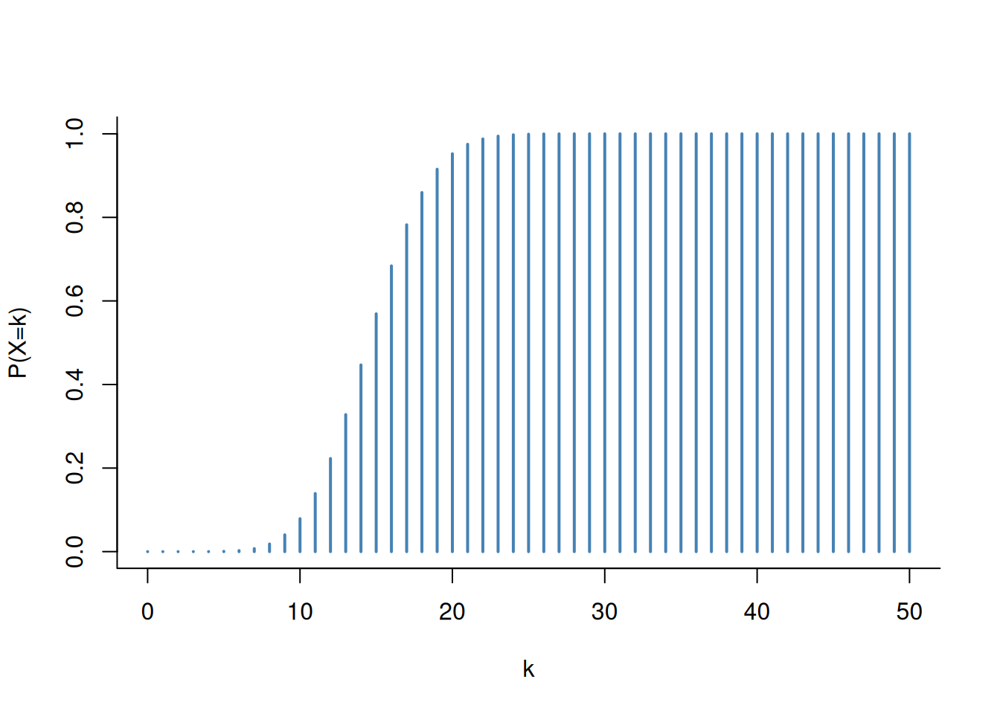
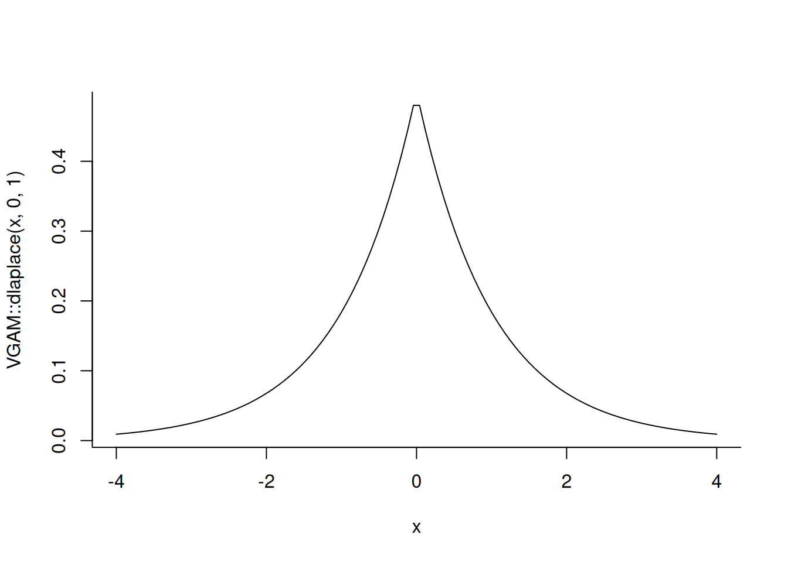
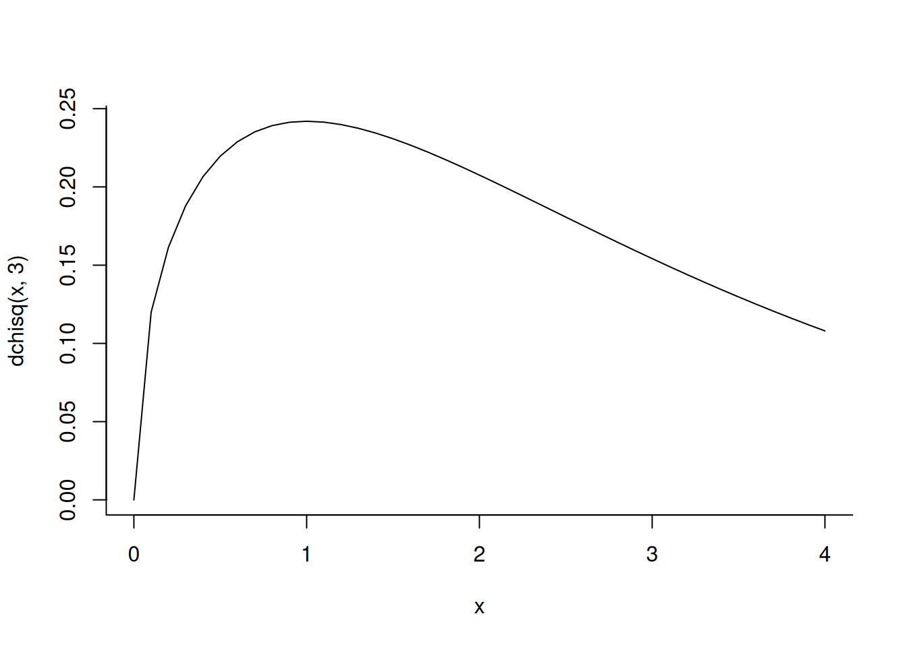
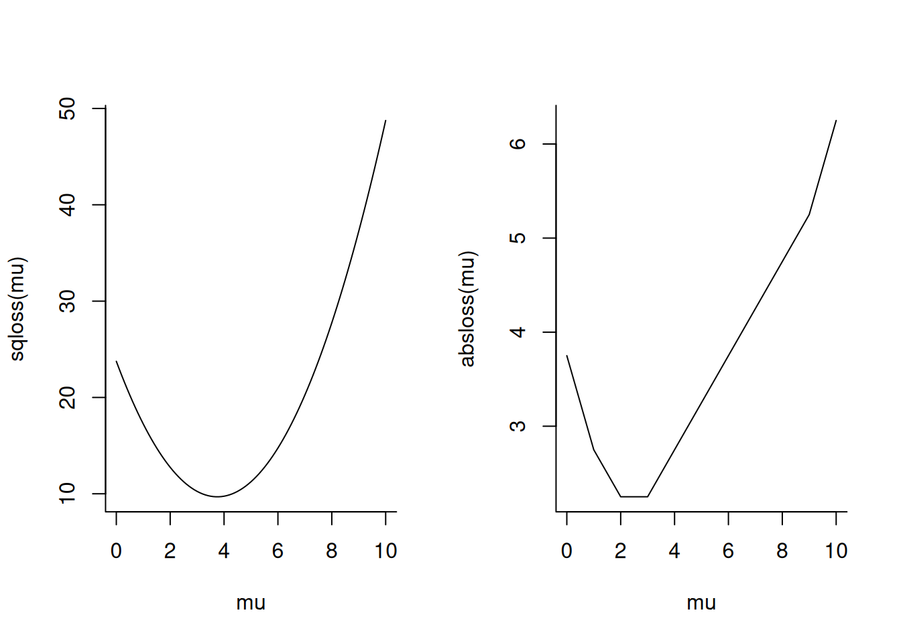

2 Linear regression
Good afternoon, welcome back!
We’re now in week 2. Last week many of you completed portfolio item 5 (finding your own data set), but not all. Those who haven’t should do so soon to get started. It’s not mandatory – you can postpone it until the deadline – but I recommend starting your search now. This also lets us analyze your data sets in class, which I’d like to do. For today, I found five example data sets we might examine.
2.1 On the difference between this course and others in the Master
A few people were very ambitious. I saw things like huge image data sets, several gigabytes of image data. I saw some time series data. I don’t want to curb your enthusiasm — it’s fine to use all of that. But just to be clear, this is not an image analysis class. For this we have other courses, such as “Intelligent Systems in Medical Imaging”, “Deep Learning” or “Computer Graphics and Computer Vision”. And we probably won’t be able to do time series analysis. While we don’t currently offer a dedicated time series analysis course, the topic is covered in the course “Complex Adaptive Systems”.
For this class, tabular data might be the easiest. Tabular data has subjects in the rows and variables in the columns, and it can be stored as Excel or CSV files. The examples I’ll show will use tabular data. But even with tabular data, make sure you can download the file and you actually understand the variables. If they have abstract names like \(x_1, x_2, x_3\), you may need to look for a codebook.
Another difference I want to emphasize is between this course and the course Machine learning in practice (MLIP). This course won’t focus on building the best prediction models with the highest accuracy, or solving Kaggle challenges. That’s what MLIP is about. This course focuses on inference, which means we start from a scientific question.
Many techniques, including regression models, can be used for both inference and prediction. But for inference, it’s crucial that you understand the data that you’re trying to analyze and that you can formulate specific research questions.
2.2 Linear regression
Interesting playlist about various concepts in Linear Regression and Linear Models by StatQuest with Josh Starmer: https://www.youtube.com/watch?v=2AQKmw14mHM&list=PLblh5JKOoLUIzaEkCLIUxQFjPIlapw8nU
Today we’re going to cover the topic of linear regression. Most of you should have prior experience with linear regression. Who has never heard of linear regression before? (no one). Looks like you’ve all heard of linear regression before. That’s good.
You may have encountered linear regression in various Bachelor courses, including “Data Analysis”, “Data Mining”, and “AI”. All of these cover some of the topics we’ll cover here in more depth. I’ll try not to repeat too much, but I’ll go through some of the basic materials we’ll need in the beginning just to make sure we’re all on the same page.
What I won’t do is introduce probability theory from the beginning once again. If your background in probability theory is not very solid – maybe because some earlier courses didn’t go that well for you – I recommend this online class from MIT: https://www.youtube.com/watch?v=1uW3qMFA9Ho&list=PLUl4u3cNGP60hI9ATjSFgLZpbNJ7myAg6 which I think really nicely covers the basic concepts of probability theory. The teacher is very good.
Our first question in this class today is this one:
2.3 How is a linear regression model mathematically defined?
We want to work our way towards a mathematical definition of a regression model. There are actually many possible definitions, but first I want to hear from you. What do you think could be the definition of a regression model?
Maybe how variable \(X\) is correlated to variable \(Y\).
A regression model indeed says something about how variable \(X\) is correlated to variable \(Y\), but I was looking for a more equation-like definition.
What do you think?
A linear equation that has the least amount of error when you try to predict something from the dataset.
That sounds good! How does this equation look like?
\(a \cdot x + b\).
That’s a start, it’s one way to write it. I’ll use \(\alpha\) and \(\beta\) instead of a and b, but it’s basically what you said. I’m also going to swap the coefficients and make it:
\[ \beta x + \alpha \]
But that’s not an equation yet. So far it’s just a term.
It should be \(y = \beta x + \alpha\)
Yes, that’s good!
If you just write it \(\beta x + \alpha\), you take into consideration just one variable and you don’t see the relation between the variables.
Very important point. If you’d just take one variable, it wouldn’t be about a relation. And as we had heard previously, regression is indeed about the relation between two variables (or more). There are now multiple questions, maybe also objections here.
With matrices, you can also have multiple \(X\)’s and multiple \(Y\)’s.
Yes, we could have multiple \(X\)’s and multiple \(Y\)’s. Today, we’re not going to get to that, but having multiple \(X\)’s would be called a multivariable regression. But let’s first stick with two variables. Are we happy with our definition?
We need to account for the error, so we need to add error.
Great point. We previously heard something about some error, right? And indeed, there’s no error here yet. So something’s missing. By the way, the equation \[ y = \beta x + \alpha \] is exactly how I defined a linear regression model in the data analysis course, right? That was fine for a first semester bachelor course. But it’s actually not a complete definition, because it only defines a line. How could we include some notion of an “error” into this equation?
A linear regression is an example of a statistical model. A statistical model is generally indeed defined in terms of equations, but it has a certain meaning that a simple equation like this does not have, and which we’ll need to understand better to define a notion of “error” for our regression model. We’re therefore going to take a small detour and ask: what’s a statistical model?
Let’s collect some ideas. What could a statistical model be? The regression model is one example of a statistical model. Does anyone have others?
Normal distribution.
Yes, a normal distribution is another example of a statistical model. We’re going to start from this example and introduce some notation to make this clearer.
What kind of object is a normal distribution?
It’s a distribution of our values.
Yes – we call this a probability distribution.
2.4 Recap on probability distributions
A probability distribution is a function \(P(x)\). For now, we’ll consider that \(x\) is a real number. It can also be a discrete number, but as we shall see, using a continuous \(x\) will actually make some things more difficult for us.
Can any function be a probability distribution?
No, because the integral of the entire probability distribution needs to be 1.
Yes! Probability distributions must satisfy certain requirements. They are called the axioms of probability. Indeed, one requirement is that the integral over the whole distribution should be 1.
The space on which we define \(X\) is also sometimes called an event space.
Do we have more requirements:
It needs to be non-negative.
Yes! We cannot have negative probabilities.
So, to summarize:
- A probability density function is a function \(P(x), x \in \mathbb{R}\)
- It holds that \[ \int P(x) \, \, dx = 1 \]
- It holds that \[ P(x ) \geq 0 \]
- The values where \(P(x) > 0\) are called the support of \(P\)
Why might it be useful to have a support that covers only a part of the real line?
For example, possibly the amount of something?
Like what, for example?
The number of people in a building.
Good example. A number of people can’t be negative. If we were to use a normal distribution as a model of numbers of people, we’d in principle allow this number to be negative.
But in practice, it could be that even if we model the number of people in this building with a normal distribution, the chance to actually get a negative number might be very small. For example, suppose we use a normal distribution with a mean of 600 and a standard deviation of 100. The chance to get a value of less than 0 is less then one in \(10^9\). That probability is so small that we may well decide we’re OK with this anyway.
2.5 Some example normal distributions
Now let’s move on to statistical models, and let’s start by recalling the perhaps best-known one: the normal distribution.
We often write the normal distribution with a calligraphic \({\cal N}\). Let’s recall the formula, which you may have seen many times:
\[ {\cal N}( x, \mu, \sigma ) = \underbrace{\frac{1}{\sqrt{2 \pi \sigma^2} }}_{\text{prefactor}} \exp\left( \frac{ - (x-\mu)^2 }{ 2 \sigma^2 } \right) \]
The normal distribution looks like this:
x <- seq( -4, 4, length.out=100 )
plot( x, dnorm( x, mean=0, sd=1 ), type='l' )
lines( x, dnorm( x, mean=1, sd=1 ), col=2 )
abline( v = 1 )
We also sometimes omit the argument \(x\) and simply write it as
\[ {\cal N}( \mu, \sigma ) = \underbrace{\frac{1}{\sqrt{2 \pi \sigma^2} }}_{\text{prefactor}} \exp\left( \frac{ - (x-\mu)^2 }{ 2 \sigma^2 } \right) \]
The prefactor is a term that is needed to ensure that \[{\cal N}( x, \mu, \sigma )\] integrates to 1.
To show that the normal distribution isn’t the only one, I also want to show a different example: the so-called Laplace distribution
\[ \text{Laplace}( \mu, b ) = \frac{1}{2b} \exp\left( \frac{ - |x-\mu| }{ b } \right) \]

There are many other distributions including the uniform distribution, geometric distribution, gamma distribution, beta distribution and so forth. You’ve maybe heard about some of these.
The normal and Laplace distributions will come back later in this course. But let’s quickly build some intuition why they might be relevant. If you compare the formulas, what do you notice when you look at the parts where \(x\) is compared to \(\mu\)?
First of all, note the negative sign in both, e.g. in the term \(-(x-\mu)^2\) in the normal distribution. This negative sign is there because of the exponentiation \[\exp \left( \frac{-(x-\mu)^2}{2\sigma^2} \right) \]. It ensures that the probability density values decrease as \(x\) moves away from \(\mu\). The same is true for the Laplace distribution, where we see a similar term \[\exp\left( \frac{ - |x-\mu| }{ b } \right)\].
Now let’s compare the two terms more: The normal distribution uses a squared difference, whereas the Laplace distribution uses an absolute difference. Now we see that this could be connected to the concept of error that we’re after! It somehow seems that
- The normal distribution has something to do with the squared error \((x-\mu)^2\), whereas
- The Laplace distribution has something to do with the absolute error \(|x-\mu|\)
And this is indeed the case, as we’ll see in the coming 1-2 weeks!
2.6 Conditional probability distributions
Having hopefully formed some intuition on probability distributions, let’s get back to what we set out to do: define statistical models.
Specifically, I want to introduce to you two different kinds of statistical models. Let’s consider two variables again: \(X\) and \(Y\). First, we have models of the form
\[ P(x,y) \]
Such a model is called the joint distribution of \(X\) and \(Y\).
And then there’s a second kind of probability model that looks like this:
\[ P( y \mid x ) \]
Does anyone recognize what this is?
A conditional probability.
Yes! For those of us who need a reminder, let’s recall its definition:
\[ P( y \mid x ) = \frac{P(x,y)}{P(x)} \]
The conditional distribution models the probability of \(Y\) after \(X\) has already been observed. We know what the value of \(X\) is, and we ask: how does that change our belief (for epistemic probability) or the chance (for aleatorial probability) that \(Y\) will occur? For discrete events, we can compute this by taking the joint probability that X and Y both happen, and dividing that by the probability that X happens. That same definition holds for continuous probability densities.
Another interpretation of the conditional probability is that it predicts the value of \(Y\) from the information contained in \(X\). That’s why conditional probabilities are so important in machine learning – they formalize the kind of models we use for prediction. Whether that’s a regression model, deep neural network, or some other machine learning method, you can think of many of them as conditional probability models of some kind.
2.7 Generative versus discriminative models
There’s another useful way to distinguish two models of the type \(P(x,y)\) and \(P(y \mid x)\), which we’ll talk about now.
In the last three years, one kind of AI model became very powerful and popular – the so-called generative AI model. And generative models are models of the form
\[P(x)\]
where \[x\] could be a vector of very high dimension (if there are two dimensions, we could again write \(P(x,y)\) instead). The reason such models are called “generative” is that we can generally simulate data from them.
On the other hand, a model of the form
\[P( y \mid x )\]
is called a discriminative model. For example, when we’re trying to build a classifier, we would typically reach for a model of this second kind – such as a logistic regression model – rather than of the first kind (e.g., Naive Bayes).
There’s an intuitive explanation for this general preference for discriminative models for prediction and classification. Thinking back about the definition of conditional probability,
\[ P( x \mid y ) = \frac{P(x,y)}{P(y)} \]
can anybody see why? Think about how much effort it would be to train these models.
Well, since you’re trying to, it’s discriminative if you’ve already recorded X, so you can use that information to predict Y.
Yes, true. If you just want to make predictions, you don’t need to generate X because it’s already there. Think about weather prediction, for example. Let’s say you want to predict tomorrow’s temperature from today’s temperature. In a generative model, we could simulate both the temperature of today and the temperature of tomorrow. But we don’t really need to make new temperatures for today because we already know it, and therefore we treat it as fixed. We just want to predict what tomorrow’s value will be.
Mathematically speaking, let’s think how can we get \(P(x)\) if we have \(P(x,y)\). How would that work?
Marginalization.
Yes, and how does that work mathematically?
By integration.
Exactly, we integrate like this:
\[ P( x ) = \int_y P( x, y )\, dy \]
This operation is called marginalization, and it allows me to get \[P(y)\] if I have \[P(x,y)\]. And by the definition of conditional probability, I can now also get \[ P( y \mid x ) \], because
\[ P( y \mid x ) = \frac{P(x,y)}{P(x)} \]
In other words, if we have a generative model, we can generally use that to make a discriminative model!
For example, I could take ChatGPT and turn it into a classifier. But it does not work the other way around: I can’t take a discriminative model and then make it generative. For instance, if I have a classifier of cats versus dogs, I can’t use that to make new pictures of cats and dogs. But if I have a generative model that makes pictures of cats and dogs, it’ll generally be easy to transform that to something that classifies cats versus dogs. For example, we could look at the inner layers of a network, extract them, and feed them to a regression model.
In that sense, generative models are more powerful than discriminative ones. And that’s why a common view in machine learning has been that we don’t use generative models unless we have to, because they are more difficult to make. (That’s not alway true though. A seminal paper on this topic by Ng and Jordan, NeurIPS 2001, shows that generative models can be better classifiers with small samples: https://ai.stanford.edu/~ang/papers/nips01-discriminativegenerative.pdf)
Interestingly, now with the new generative AI tools, we can often build classifiers that may outperform discriminative ones. For instance, we can use ChatGPT for natural language processing tasks like sentiment analysis.
Does this mean that we can in theory easily make an AI that would check, for example, student reports that use chat GPT?
It’s possible in theory to build an AI that detects ChatGPT-written reports by training a classifier on latent representations of AI vs. human text. But in practice it wouldn’t be reliable because the classifier operates in what we call an adversarial context: students will actively adjust their text until it passes. AI models are generally very vulnerable to such attacks. In image classification models, for instance, adversarially changing just a few pixels could make a pig get classified as an airplane. Therefore, while AI detectors can be built in principle, they won’t be reliable as they are too easy to fool.
There’s the saying when a measure becomes a target, it ceases to be a good measure.
That’s Goodhart’s law. For example, if you rank people by a metric, they’ll attempt to game that metric. If you judge me on how many papers I publish, I’ll going to make sure my name goes on papers just for that reason. Likewise, If I run an AI detector on your work, you’ll find out about it and find some way to fool it. So that’s not something I believe can be done.
2.8 Defining linear regression as a conditional probability model
We have now spent quite some time on introducing probability models. This was important because we’ll use this distinction later. But now let’s move back to the previous question: how can we take our equation
\[ y = \beta x + \alpha \]
and turn it into a complete probability model?
Add an error.
Yes. This would typically be written something like this:
\[ y = \beta x + \alpha + \epsilon \]
The issue with this notation is that it hides the fact that \(\epsilon\) is a random variable, whereas \(\alpha\) and \(\beta\) are just numbers. We also sometimes write
\[ y = \beta x + \alpha + {\cal N}(0,\sigma) \]
to make clear that what we’re adding is a normally distributed random variable, with mean 0. (This notation is not great either, because it looks like we’re adding numbers to probabilities.)
The best way to write it is probably this:
\[ P( y \mid x ) = {\cal N}(\beta x + \alpha, \sigma) \]
This works because adding a number to a normally distributed variable shifts its mean by that number.
Now lo and behold, our model now has three parameters rather than two: we need the slope \(\beta\), the intercept \(\alpha\), and the standard deviation of the error \(\sigma\). Often we don’t care so much about the \(\sigma\) – we might call it a “nuisance parameter”.
For now, let’s ignore where we get these values from – our current focus is just defining the model. For given values of beta, alpha and sigma, you can determine the probability of each observation \(y\) conditioned on \(x\).
For example, suppose that
\[\beta=0.5, \alpha=1, \sigma=1\]
Then
\[P( y = 0 \mid x = 0 ) = {\cal N}(\beta x + \alpha, \sigma) = {\cal N}(1, 1) \approx 0.24 \]
So to repeat, a conditional probability model allows me to compute conditional probabilities (or more precisely, for continuous data, probability densities) for a variable \(y\) given a conditional variable \(x\) (which could also be a vector of many values).
(Break)
2.9 Additional background on probability distributions
I noticed that there is still considerable lack of clarity related to what probability densities mean for continuous variables. It’s important for us to understand this fully, so I want to make sure that I’m not losing you here – probability densities are a very important concept for statistical inference.
I’m therefore changing my plan and will spend some time on trying to explain this better.
First of all, let’s look again at the plot of a normal distribution. Here are two examples. The black line is the normal distribution with mean 0 and standard deviation 1, while the red line is the normal distribution with mean 1 and standard deviation 1.
x <- seq( -4, 4, length.out=100 )
plot( x, dnorm( x, mean=0, sd=1 ), type='l' )
lines( x, dnorm( x, mean=1, sd=1 ), col=2 )
You can see if I change the mean, the whole curve shifts.
Now let’s ask again: what does a value like dnorm( 0, mean=1, sd=1 ) (=0.24, the value of the red curve at 0), mean exactly?
We’re assuming here that \(X\) is a real number. There are a lot of real numbers – uncountably infinitely many ones, in fact. So the value 0.24 can’t be a probability. For any number drawn at random from the real line (no matter the distribution, as long as it’s positive everywhere), the chance that this number is exactly 0 is 0.
Let’s convince ourselves that’s true by doing some simulations in R.
In R, I can sample from random distributions
using functions that start with the letter r, which
stands for draw a random number.
So if I want to draw a random number
with a normal distribution, I use rnorm like this:
## [1] 0.06267497I can also generate multiple random numbers at once like this:
## [1] 1.0298781 2.8324175 1.3532997 1.3593302 1.1220564 1.6242943 2.6267384
## [8] 0.3451693 0.6590109 0.3078327If 0.24 were the probability to get a \(0\) from this, approximately 24% of these values should be 0, which is clearly not the case.
In fact, even if we generate very many random numbers, we’ll be unable to ever exactly hit 0. We’ll almost always be ever so slightly off.
## [1] FALSEWhy don’t we specify the margin of error?
Yes, we’re going to do something like that. But before we go there, consider what would happen in the discrete case, which you may be more used to thinking about.
Let’s take the binomial distribution: We repeat an experiment (like a coin flip) \(n\) times, and the success probability each time is \(p\). Then the number of successes (which is at least 0 and at most \(n\)) has a binomial distribution. Let’s generate some random numbers from a binomial distribution for fair coin flips:
## [1] 1 1 1 1 1 1 3 1 1 1For example, in my first example, two of my three coin flips ended up with me “winning” (which I need to define beforehand as one side of the coin).
Like any probability model, the binomial distribution also has a density function. Let’s check its value for two wins in the setting above:
## [1] 0.375In the discrete case, this actually is simply a probability. It says that when I repeat my experiment (3 coin flips each) a large number of times, then approximately 37.5% of those experiments should have two “wins”. Let’s check if that makes sense by simulation:
##
## 0 1 2 3
## 106 397 376 121The percentage of experiments with 2 wins is 38.6%, indeed close to what I was expecting!
So, we have an important distinction between discrete and continuous variables when it comes to probability density functions:
- For discrete \(X\), \(P(x)\) is a probability.
- For continuous \(X\), it is not.
But then, what is it? Let’s go back to your idea of “margin of error” from earlier. What does a “margin of error” mean? We could allow a “margin of error” by saying: instead of requiring my number \(X\) to be exactly some value like \(0\) - which will never happen – I require it to be in some interval \([a,b]\) that contains 0. The probability that this happens is the integral
\[ \text{Pr}[a \leq x \leq b] = \int_{a}^{b} P(x') \,\, dx' \]
That’s how probability and the density function are linked in the continuous case: instead of specifying the probability to be exactly some given event, we specify probabilities to be in some interval (which in some sense needs to be a mathematically reasonable interval, but we won’t get into the pathological edge cases here). All such probabilities can be obtained by integrating the density function.
Let’s see how we can do that in practice. For our earlier case of the normal distribution \({\cal{N}(1,1)}\), let’s draw a large amount of random numbers:
Now let’s ask: how many of these are between 0 and 1?
## [1] 0.341391Approximately 34%. Now let’s verify that this matches what we get by integrating the density function \[{\cal{N}(1,1)}\]. We can’t do that analytically, but in R we have the integral available using the function pnorm. For example, we can get the integral
\[\int_{x=-\infty}^{1} {\cal N}(1,1)\]
by typing
## [1] 0.5This was expected – 1 is the peak of the curve, and the curve is symmetric, so half of the curve should be below 1.
Now we can use the fact that
\[ \int_{x=a}^{b} P(x) \, dx = \int_{x=-\infty}^{b} P(x) \, dx - \int_{x=-\infty}^{a} P(x) \, dx \]
to compute the probability that \[x\] is between 0 and 1:
## [1] 0.3413447Indeed, this is very close to what we found in our simulation earlier!
We might now ask: why don’t we consider the integral \[\int P(x) dx \] as the probability model rather than \[P(x)\] itself? After all, the integral is what we get our actual probabilities from, so that seems to make more sense.
It is more similar to the discrete case.
That’s exactly right. The probability density function for the continuous case closely resembles the probability itself in the discrete case.
For example, the binomial distribution we mentioned earlier actually looks similar to the normal distribution when plotted:
n <- 50; p <- 0.3; k <- 0:n
plot(k, dbinom(k,n,p), type="h", lwd=2, col="steelblue",
xlab="k", ylab="P(X=k)")
I would also argue that density plots are easier to interpret than plots of integrals of densities, which look like this:
n <- 50; p <- 0.3; k <- 0:n
plot(k, pbinom(k,n,p), type="h", lwd=2, col="steelblue",
xlab="k", ylab="P(X=k)")
From the density plot, it’s easier to see:
- That the distribution is (roughly) symmetric
- That the distribution’s peak (most likely value) is at 15
- That the distribution does not have very heavy tails (very small and very large values are unlikely)
To illustrate this point even more, I also want to show for comparison the Laplace distribution.

I’m showing this because someone asked: what’s the difference between a normal distribution and a probability distribution?
The answer is: there are many different probability distributions, with both the Normal and the Laplace distribution being examples.
From these plots, we can see that
- The Laplace distribution is “peakier”, it has a “sharp” peak whereas the Normal distribution has a “round” peak
- The Laplace distribution has heavier tails: it assigns higher probabilities to extreme events than a Normal distribution.
2.10 “The regression model”
When we define a regression model as a conditional probability model, why do we use the normal distribution rather than the Laplace distribution, gamma distribution or any other one?
Is it some of the assumption you take based on the data?
It’s an assumption, yes, but there’s generally no reason to believe a normal distribution works best. In fact, we can also make a regression model with Laplace errors, Cauchy distributed errors etc. But when we talk about “the” regression model, we typically refer to a model with normally distributed errors.
Another question asked during the break was: does the regression function need to be linear? In fact it doesn’t – the linear model is more flexible than you may think, and we’ll return to that point later.
2.10.1 Linear regression as conditional expectation
The probability model is one way to define a linear regression, but there’s another one, which I want to show now.
We just defined the linear model as a conditional probability distribution. That is a very powerful kind of model because it defines the entire probability density \[P( y \mid x )\]. Often I may not need the whole probability density. We can make less “ambitious” models by saying: I don’t want to model the entire distribution, but just some aspects of the distribution.
One way to do this for a linear model uses the concept of conditional expectation – expectation of Y conditioned of X:
\[ E[ y \mid x ] \]
Just to recap, what was an expectation again? How does the expectation relate to the probability distribution? It’s defined by the integral
\[ E[ x ] = \int \, P(x) \, x \, \, dx \]
So we get the expectation by integrating over the probability distribution. In many cases – but not always – the expectation corresponds to the peak of the distribution,
In the normal distribution, we directly specify the expectation: it is the parameter \(\mu\). In a Laplace distribution, we also specify the expectation using the parameter \(\mu\). For some more fancy distributions, the expectations could be a bit harder to see from a plot. (For example, the expectation of a chi-square distribution with 3 degrees of freedom is 3, which is not so obvious from its plot:)

The general definition of the expectation also works for conditional expectations, i.e.,
\[ E[ y \mid x ] = \int \, P(y \mid x) \, y \, \, dy \]
Think of expectation as something that you can do to a probability distribution (an operator), and then you get a number.
So instead of modeling an entire function and assigning some probability density to all possible values, I’m just going to model one number – my model is going to output one number for each given value of x.
So why would this be, so why do you think this is also a useful thing to have, and why do people not always aim to model the entire distribution? And think of it in the context of trying to predict something.
It’s the most likely case.
That’s sometimes true, but not always – the expectation may not be the most likely case.
2.11 Loss functions
Having introduced the concept of expectation, we’ll next talk about loss, and how these two relate to each other.
I ’ll set the following task for myself: I want to make a good prediction using a single number. So that’s not a conditional prediction – I just want to produce a general prediction. Suppose that I’m asked: how many people are in this building right now? And without any other information. And I need to make a prediction without using any other information. Plus, someone’s going to punish me for being wrong.
Let’s call my prediction \(\mu\). I need to choose which value of \(\mu\) I use. Let’s say I choose \(\mu=600\). A loss function is a way to measure how good this prediction is.
We could think of different possible loss functions. But we heard before of a loss function called the squared error, so let’s start with that. Loss functions are often written using \(L\), and they are a function of my prediction and the actual observation. For example, the squared loss is
\[ L( \mu, x ) = (x - \mu)^2 \]
So say I’m off by 1, I’ll be punished by 1. If I’m off by 2, I’ll be punished by 4. And if I’m off by 10, I will be punished by 100. So, being far off becomes increasingly bad.
In this scenario, what’s the best value I can use for mu?
X?
Yes, but X can change. Today there could be 500 people in this building; tomorrow there could be 700. If I always knew \(X\), that would be great – but in my setup, I was forced to give a prediction without using any external information.
Say I’m given a working week’s worth of data (5 days).
\[x_1, x_2, \ldots, x_5\]
Given that sample, what’s the best prediction I could make?
Take the average.
Yes! But how do we know that this minimizes the loss?
Let’s formalize the problem. We need to use the prediction \(\mu\) that minimizes the sum of squared errors (SSE)
\[\text{argmin}_\mu \sum_{i=1}^n L(\mu, x ) = \sum_{i=1}^n (x_i-\mu) ^2 \]
Let’s minimize this together:
\[ \frac{\delta}{\delta \mu} \sum_{i=1}^n (x_i-\mu) ^2 = 0 \]
\[ \Leftrightarrow \sum_{i=1}^n - 2 (x_i-\mu) = 0 \]
\[ \Leftrightarrow \sum_{i=1}^n (x_i-\mu) = 0 \]
\[ \Leftrightarrow \sum_{i=1}^n x_i = \sum_{i=1}^n \mu = n \mu \]
So we get:
\[ \mu = \frac{1}{n }\sum_{i=1}^n x_i \]
Thus, the SSE is indeed minimized by taking the average!
That’s one reason we use the squared error loss: it leads to the sample average as a prediction, and the sample average is a well-understood quantity. Moreover, if we take increasingly large samples, the sample average converges to the expectation (this fact is called the law of large numbers).
2.12 Square loss verus absolute loss
At this point, I hope to have convinced you that making a prediction based on minimal squared loss leads to the sample mean (sample average) as an estimate of the expectation.
But why are we using square loss? There are certain reasons that we like the square loss.
Can you start with the number of distribution? (Note: I’m not sure this is correctly transcribed)
Well, this doesn’t depend on any distribution. It’s always true for no matter what kind of sample this comes from. As long as the underlying distribution has an expectation (there are some extremely heavy-tailed distributions that don’t have a finite expectation, an example is the Cauchy distribution) then this is the best value that I can use.
Because being a quadratic function, it generates a higher magnitude than just modulo. So quadratic function for making a lot of errors.
The question is, do we want that?
I was thinking that it eliminates negative numbers, negative errors.
Let’s contrast the square loss to a different kind of error that we could also use. I just very nicely derived the average as the estimate that minimizes the squared loss function. Instead I could also have used, for example, the absolute error:
\[ L( \mu, x ) = | x - \mu | \]
That’s a different kind of loss I could use that’s also non-negative. Because indeed, a loss function should generally not allow negative numbers, it should typically be positive. It should also not penalize me for being right. So if I get my prediction correct (\(x=\mu\)) then it should be zero, and otherwise it should be some positive number.
But that’s really all, right? I could also use something completely different, say \(| x - \mu |^5\), or \(| x - \mu |^{1.2}\). If I would minimize those loss functions, it won’t lead to the average anymore.
In fact, the loss \(| x - \mu |\) is minimized by choosing \(\mu\) to be the median. I’m not gonna prove this now here because it’s a little difficult. (It’s not really that hard, and I’ll do it below.)
In summary, I am free to use very different loss functions, and they lead to different estimators. The squared loss leads to the mean, and the absolute error leads to the median.
(After this point, I made a mistake in the lecture and confused the zero-one loss with the derivative of the mean absolute error. I’m really sorry for that, and I give a corrected version below that reflects what I actually meant to say.)
Let’s consider why the mean absolute error leads to the median. To optimize the sum of absolute errors
\[\sum_{i=1}^n| x_i - \mu |\]
we’ll again consider the derivative
\[\frac{\delta}{\delta \mu}\sum_{i=1}^n| x_i - \mu |= \sum_{i=1}^n \text{sign}(x_i - \mu) \]
where
\[ \text{sign}(x) = \begin{cases} -1 & x < 0 \\ 1 & x > 0 \\ 0 & \text{otherwise} \end{cases} \]
(This is technically not a derivative because the point at 0 is not continuous – it’s one of the possible “subgradients”) Note that the expression \[\text{sign}(x_i - \mu)\] looks a bit like a zero-one-loss: if I get my “prediction” \(\mu\) right, then I am not punished, but if I get it wrong, I get punished the same no matter how far I’m off. Now, the condition
\[ \sum_{i=1}^n \text{sign}(x_i - \mu) = 0 \]
is satisfied if exactly as many predictions are too low (\(\mu < x_i\)) as are too high (\(\mu > x_i\)). This is exactly what using the median for \(\mu\) achieves. For example, suppose my samples are
\[ x_1 = 1, x_2 = 2, x_3 = 9 \]
Then I must use \[\mu=2\] to get the minimum loss
\[ \sum_{i=1}^n \text{sign}(x_i - \mu) = -1 + 0 + 1 = 0 \]
and no other value for \(\mu\) will achieve this.
On the other hand, suppose we have
\[ x_1 = 1, x_2 = 2, x_3=3, x_4 = 9 \]
Now we can use any number between 2 and 3 (exclusive) to minimize the absolute error.
Let’s also quickly visualize the difference between squared error and absolute error for this example.
x <- c( 1, 2, 3, 9 )
mu <- seq( 0, 10, by=.1 )
sqloss <- Vectorize(
function( mu ) mean( (x-mu)^2 ) )
absloss <- Vectorize(
function( mu ) mean( abs(x-mu) ) )
par( mfrow=c(1,2) )
plot( mu, sqloss(mu), type='l')
plot( mu, absloss(mu), type='l' )
From this comparison, we can see two of the technical reasons that squared loss is often preferred over absolute loss:
- It is smooth (continuous everywhere)
- It has a unique minimum
Another reason squared loss is often preferred is that it can often be minimized analytically, which allows us to perform minimization much faster.
2.13 Test your understanding
Write the mathematical definition of a linear regression model as a conditional normal probability distribution. Explain why this is more complete than simply writing the equation \(y = \beta x + \alpha\).
What does the value \({\cal N}(0, 1, 1) = 0.24\) represent? Why is it not a probability, and how would you calculate the actual probability that a random draw falls between 0 and 1?
Why is it necessary that a probability density function \(P(x)\) must integrate to 1? What would go wrong if that were not the case?
Is the distribution \(P(y \mid x)\) a generative model or a discriminative model? Explain.
For which task can you only use a generative model and not a discriminative model?
We determine a parameter \(\theta\) by minimizing the loss function
\[ \sum_i L( \theta, x ) = \sum_i (x_i-\theta)^2 \]
over the sample \(x_1, \ldots x_n\). What will the resulting value of \(\theta\) be?
- The linear regression model \[ P(y|x) = {\cal N}(\beta x + \alpha, \sigma)\] has three parameters \(\alpha, \beta, \sigma\). Explain the meaning of each parameter, and explain why \(\sigma\) might be considered a “nuisance parameter.”